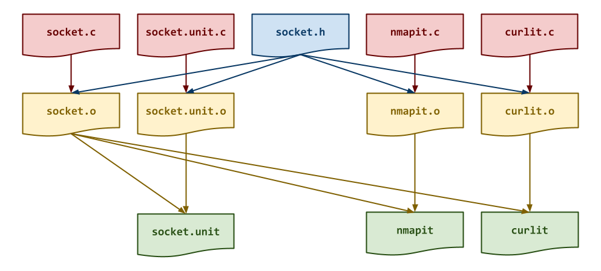
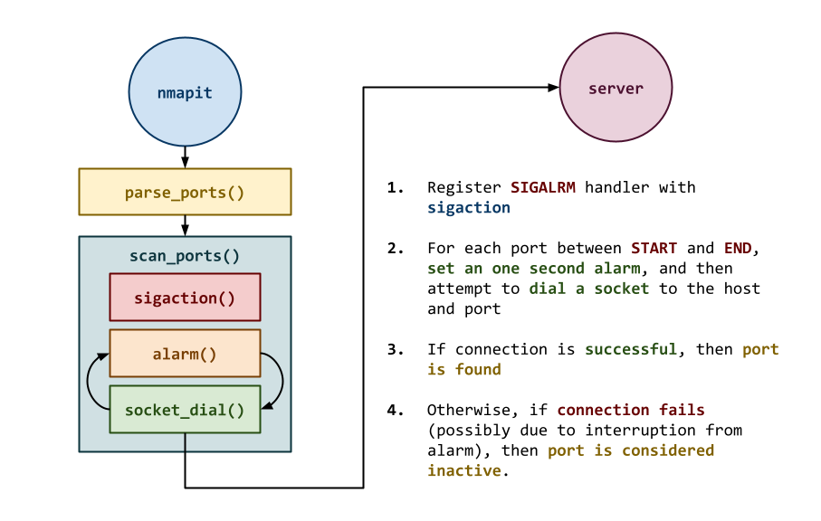
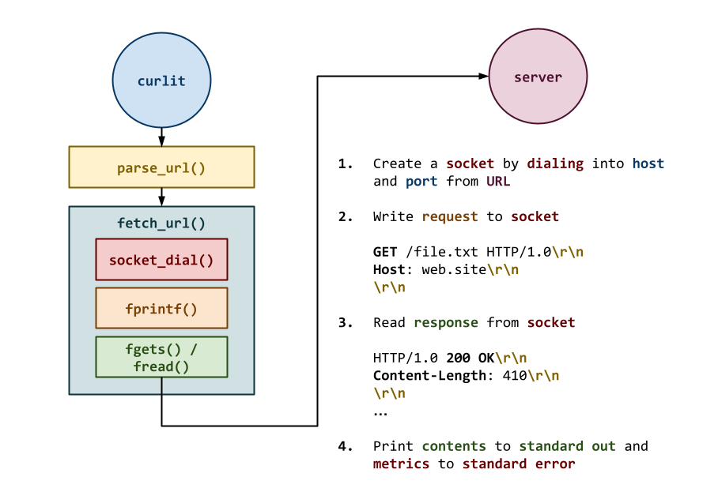

The goal of this homework assignment is to allow you to practice using system calls involving networking with sockets in C by implementing simplified versions of two familiar Unix utilities:
-
nmapit: The first utility implements a simple port scanning utility similar to nmap. -
curlit: The second utility implements a simple HTTP client similar to curl.
For this assignment, record your source code and any responses to the
following activities in the homework10 folder of your assignments
GitHub repository and push your work by noon Saturday, April 25.
Frequently Asked Question¶
Activity 0: Preparation¶
Before starting this homework assignment, you should first perform a git
pull to retrieve any changes in your remote GitHub repository:
$ cd path/to/repository # Go to assignments repository
$ git switch master # Make sure we are in master branch
$ git pull --rebase # Get any remote changes not present locally
Next, create a new branch for this assignment:
$ git switch -c homework10 # Create homework10 branch and check it out
Task 1: Skeleton Code¶
To help you get started, the instructor has provided you with the following skeleton code:
# Create homework10 folder
$ mkdir homework10
# Go to homework10 folder
$ cd homework10
# Create README
$ echo "# Homework 10" > README.md
# Download Makefile
$ curl -LO https://pnutz.h4x0r.space/courses/cse.20289.sp26/static/txt/homework10/Makefile
# Download C skeleton code
$ curl -LO https://pnutz.h4x0r.space/courses/cse.20289.sp26/static/txt/homework10/curlit.c
$ curl -LO https://pnutz.h4x0r.space/courses/cse.20289.sp26/static/txt/homework10/nmapit.c
$ curl -LO https://pnutz.h4x0r.space/courses/cse.20289.sp26/static/txt/homework10/socket.c
$ curl -LO https://pnutz.h4x0r.space/courses/cse.20289.sp26/static/txt/homework10/socket.h
$ curl -LO https://pnutz.h4x0r.space/courses/cse.20289.sp26/static/txt/homework10/socket.unit.c
Once downloaded, you should see the following files in your homework10
directory:
homework10
\_ Makefile # This is the Makefile for building all the assignment artifacts
\_ nmapit.c # This is the nmapit utility C source file
\_ curlit.c # This is the curlit utility C source file
\_ socket.c # This is the timeit library C source file
\_ socket.h # This is the socket library C header file
\_ socket.unit.c # This is the socket library C unit test source file
Task 2: Initial Import¶
Now that the files are downloaded into the homework10 folder, you can
commit them to your git repository:
$ git add Makefile # Mark changes for commit
$ git add *.c *.h *.md
$ git commit -m "Homework 10: Initial Import" # Record changes
Task 3: Unit and Functional Tests¶
After downloading these files, you can run make test to run the tests.
# Run all tests (will trigger automatic download)
$ make test
You will notice that the Makefile downloads these additional test data and scripts:
homework10
\_ curlit.test.sh # This is the curlit utility test shell script
\_ nmapit.test.sh # This is the nmapit utility test shell script
\_ socket.unit.sh # This is the socket library unit test shell script
You will be using these unit tests and functional tests to verify the correctness and behavior of your code.
Automatic Download¶
The test scripts are automatically downloaded by the Makefile, so any
modifications you do to them will be lost when you run make again. Likewise,
because they are automatically downloaded, you do not need to add or commit
them to your git repository.
Task 4: Makefile¶
The Makefile contains all the rules or recipes for building the
project artifacts (e.g. moveit, timeit):
CC= gcc
CFLAGS= -Wall -std=gnu99 -g
LD= gcc
LDFLAGS= -L.
TARGETS= nmapit curlit
all: $(TARGETS)
#------------------------------------------------------------------------------
# TODO: Rules for object files and executables
#------------------------------------------------------------------------------
socket.o:
nmapit.o:
curlit.o:
nmapit:
curlit:
#------------------------------------------------------------------------------
# DO NOT MODIFY BELOW
#------------------------------------------------------------------------------
...
For this task, you will need to add rules for building the intermediate
object files, and the nmapit and curlit executables with the
appropriate dependencies as shown in the DAG below:

Makefile Variables¶
You must use the CC, CFLAGS variables when appropriate in your
rules. You should also consider using automatic variables such as
$@ and $< as well.
Once you have a working Makefile, you should be able to run the following commands:
# Build all TARGETS
$ make
gcc -Wall -std=gnu99 -g -c -o nmapit.o nmapit.c
gcc -Wall -std=gnu99 -g -c -o socket.o socket.c
gcc -L. -o nmapit nmapit.o socket.o
gcc -Wall -std=gnu99 -g -c -o curlit.o curlit.c
gcc -L. -o curlit curlit.o socket.o
# Run all tests
$ make test
Testing socket ...
...
Testing nmapit utility...
...
Testing curlit utility...
...
# Remove generated artifacts
$ make clean
Note: The tests will fail if you haven't implemented all the necessary functions appropriately.
Compiler Warnings¶
You must include the -Wall flag in your CFLAGS when you compile. This
also means that your code must compile without any warnings, otherwise
points will be deducted.
Activity 1: socket (0.1 Points)¶
Both nmapit and curlit will require using sockets in C to communicate
with a remote host. To simplify the process of establishing a
connection, you are to make consolidate all the code for connecting to a
remote host into a single socket_dial function.
Task 1: socket.c¶
To implement the socket library, you are to complete the provided
socket.c source file which contains the following function:
/**
* Create socket connection to specified host and port.
* @param host Host string to connect to.
* @param port Port string to connect to.
* @return Socket file stream of connection if successful, otherwise NULL.
**/
FILE *socket_dial(const char *host, const char *port)`
This function uses socket to connect to the given
hostandportusing TCP and returns a read/writableFILEstream corresponding to the socket connection.
Hints:
-
You must check if any of the system calls fail.
-
You should use getaddrinfo, socket, connect, freeaddrinfo, and fdopen.
Task 2: Testing¶
As you implement the functions in socket.c, you should use the
socket.unit executable with the socket.unit.sh script to test each of
your functions:
# Build test artifacts and run test scripts
$ make test-socket
Testing socket ...
socket_dial_success ... Success
socket_dial_failure ... Success
socket_dial_mode ... Success
--------------------
Score 3.00 / 3.00
Grade 1.00 / 1.00
Status Success
You can also run the testing script manually:
# Run shell unit test script manually
$ ./socket.unit.sh
...
To debug your socket functions, you can use gdb on the socket.unit executable:
# Start gdb on socket.unit
$ gdb ./socket.unit
(gdb) run 0 # Run socket.unit with the "0" command line argument (ie. socket_dial_success)
...
You can also use valgrind to check for memory errors:
# Check for memory errors on first test case
# $ valgrind --leak-check=full ./socket.unit 0
Activity 2: nmapit (0.3 Points)¶
Once you have the socket_dial function implemented, you can complete the
nmapit utility, which scans a range of ports on a remote host and
reports which ones are active (ie. establish a connection) as shown below:

Because some hosts have firewalls which can cause connect to hang for
long periods of time, you will use a one second alarm to interrupt
socket_dial. This interruption will cause socket_dial to fail, which
means the port is considered inactive.
Here are some examples of nmapit in action:
# Display usage message
$ ./nmapit -h
Usage: nmapit [-p START-END] HOST
Options:
-p START-END Specifies the range of port numbers to scan
# Scan student05.cse.nd.edu with default ports (1-1023)
$ ./nmapit student05.cse.nd.edu
22
111
# Return success if at least one port is found
$ echo $?
0
# Scan student05.cse.nd.edu with ports 9000-9999
$ ./nmapit -p 9000-9999 student05.cse.nd.edu
# Return failure if no active ports are found
$ echo $?
1
By default, nmapit will scan ports 1 through 1023 on the remote
host. The user may specify a range of ports via the -p START-END flag.
If any port is found during the scan, then nmap will return success.
Otherwise, if no port is found, then it will return failure.
Task 1: nmapit.c¶
To implement the nmapit utility, you are to complete the provided
nmapit.c source file which contains the following functions:
/**
* Display usage message and exit.
* @param status Exit status
**/
void usage(int status);
This provided
usagefunction displays the help message and terminates the process with the specifiedstatuscode.
/**
* Handle alarm signal.
* @param signum Signal number
**/
void sigalrm_handler(int signum);
This function is called whenever a
SIGALRMis delivered to the process. When this happens, the current alarm should be cancelled.
Hint: Use alarm.
/**
* Parse port range string into start and end port integers.
* @param range Port range string (ie. START-END)
* @param start Pointer to starting port integer
* @param end Pointer to ending port integer
* @return true if parsing both start and end were successful, otherwise false
**/
bool parse_ports(char *range, int *start, int *end);
This function parses the
rangestring (ie."START-END") into individualstartandendintegers. It returnstrueif parsing both thestartandendintegers from therangestring is successful, otherwise it returnsfalse.
/**
* Scan ports at specified host from starting and ending port numbers
* (inclusive).
* @param host Host to scan
* @param start Starting port number
* @param end Ending port number
* @return true if any port is found, otherwise false
**/
bool scan_ports(const char* host, int start, int end);
This function scans the
hostfrom thestartport through theendport. As it scans the ports, it will print the number if the port is active on thehost. If any ports are found, then the function returnstrue. Otherwise, it returnsfalseif no active ports are found.
Hints:
Task 2: Testing¶
Once you have implemented nmapit, you can test it by running the
test-nmapit target:
$ make test-nmapit
nmapit ... Success
nmapit -h ... Success
nmapit -p 9000 ... Success
nmapit -p 9000- ... Success
nmapit -p -9000 ... Success
nmapit xavier.h4x0r.space ... Success
nmapit -p 9000-9999 xavier.h4x0r.space ... Success
nmapit -p 9005-9010 weasel.h4x0r.space ... Success
nmapit -p 9895-9900 weasel.h4x0r.space ... Success
--------------------
Score 9.00 / 9.00
Grade 1.00 / 1.00
Status Success
Activity 3: curlit (0.4 Points)¶
Once you have the socket_dial function implemented, you can complete the
curlit utility, which performs a HTTP request at the specified URL.

Here are some examples of curlit in action:
# Display usage message
$ ./curlit -h
Usage: curlit [-h ] URL
# Make HTTP request to http://example.com
$ ./curlit http://example.com
<!doctype html><html lang="en"><head><title>Example Domain</title><meta name="viewport" content="width=device-width, initial-scale=1"><style>body{background:#eee;width:60vw;margin:15vh auto;font-family:system-ui,sans-serif}h1{font-size:1.5em}div{opacity:0.8}a:link,a:visited{color:#348}</style></head><body><div><h1>Example Domain</h1><p>This domain is for use in documentation examples without needing permission. Avoid use in operations.</p><p><a href="https://iana.org/domains/example">Learn more</a></p></div></body></html>
Time Elapsed: 0.03 s
Bandwidth: 0.05 MB/s
# Return success if status was 200 OK
$ echo $?
0
# Make HTTP request to google.com
$ ./curlit google.com
<HTML><HEAD><meta http-equiv="content-type" content="text/html;charset=utf-8">
<TITLE>301 Moved</TITLE></HEAD><BODY>
<H1>301 Moved</H1>
The document has moved
<A HREF="http://www.google.com/">here</A>.
</BODY></HTML>
Time Elapsed: 0.04 s
Bandwidth: 0.01 MB/s
# Return failure if status was not 200 OK
$ echo $?
1
Missing Link Components¶
Note: Not all URLs will specify every component explicitly. Some may be missing the protocol or the port or even the path (the host must always be given).
For instance, here are some valid URLs you will need to support:
example.comhttp://example.comhttp://example.com:8888http://example.com/dataexample.com:9999/data
If the port is not specified, then you are to assume the default HTTP
port: 80. If a path is not specified, then you can assume an empty
path: "".
Task 1: curlit.c¶
To implement the curlit utility, you are to complete the provided
curlit.c source file which contains the following functions:
/**
* Display usage message and exit.
* @param status Exit status
**/
void usage(int status);
This provided
usagefunction displays the help message and terminates the process with the specifiedstatuscode.
/**
* Parse URL string into URL structure.
* @param s URL string
* @param url Pointer to URL structure
**/
void parse_url(const char *s, URL *url);
This function parses the
sURL string to extract thehost,port, andpathcomponents and copies them into the corresponding attributes of theURLstructure.
Hints:
-
Copy the URL
sstring to a local buffer that you can manipulate. -
Use strstr and strchr to search the local buffer for the appropriate delimiters (e.g.
HOST_DELIMITER,PATH_DELIMITER, andPORT_DELIMITER) and split the string into different components. -
Use strcpy to copy the found components to the
URLstructure.
/**
* Fetch contents of URL and print to standard out.
*
* Print elapsed time and bandwidth to standard error.
* @param s URL string
* @param url Pointer to URL structure
* @return true if client is able to read all of the content (or if the
* content length is unset), otherwise false
**/
bool fetch_url(URL *url);
This function performs a HTTP request with the given
URLby usingsocket_dialto form a TCP connection. It writes the response body or contents to standard out, and the elapsed time and bandwidth metrics to standard error. It returnsfalseif any error was experienced during the HTTP transaction or if the server response was not200 OK.
Hints:
-
You must check if any of the system calls fail.
-
You will want to follow the HTTP transaction steps described above and outlined below:
- Connect to remote host and port.
- Send HTTP request to remote server.
- Read response status and verify success.
- Read response headers (until there is an empty line).
- Read response body and copy to
stream. - Close connection.
Return number of bytes written to
stream.
Remember that HTTP uses DOS line endings and terminates each line with
\r\n.Use strstr to check the response status.
Use sscanf to parse the response headers for the value of
Content-Length.Use fgets to read the response status and headers.
Use fread and fwrite to read the response body since it may contain binary data.
If the server does not return a HTTP status of
200 OKor it provides aContent-Lengthand the number of bytes written tosteamdoes not match, then the function should returnfalseto indicate an error. Otherwise, if the HTTP status is200 OKand there is noContent-Lengthor the number of bytes written matches, then it should returntrue.Only a HTTP status of
200 OKis considered successful.Task 2: Testing¶
Once you have implemented
curlit, you can test it by running thetest-curlittarget:$ make test-curlit Testing curlit ... curlit ... Success curlit -h ... Success curlit -? ... Success curlit http://fake.host ... Success curlit http://example.com ... Success curlit http://nd.edu ... Success curlit h4x0r.space ... Success curlit h4x0r.space:9898/mind.txt ... Success curlit h4x0r.space:9898/txt/walden.txt ... Success curlit h4x0r.space:9898/txt/gatsby.txt ... Success curlit http://h4x0r.space:9898/txt/warandpeace.txt ... Success curlit http://h4x0r.space:9898/img/appa.png ... Success -------------------- Score 12.00 / 12.00 Grade 1.00 / 1.00 Status SuccessActivity 4: Quiz (0.2 Points)¶
Once you have completed all the activities above, you are to complete the following reflection quiz:
As with Reading 01, you will need to store your answers in a
homework10/answers.jsonfile. You can use the form above to generate the contents of this file, or you can write the JSON by hand.To test your quiz, you can use the
check.pyscript:$ ../.scripts/check.py Checking homework10 quiz ... Q01 8.00 / 8.00 Q02 4.00 / 4.00 Q03 4.00 / 4.00 Q04 4.00 / 4.00 -------------------- Score 20.00 / 20.00 Grade 1.00 / 1.00 Status SuccessExtra Credit 04 (0.5 Points)¶
For the last quarter of the semester, you will have three extra credit opportunities worth
0.5points each. You may do none, one, two, or all three of them.Do The Homework¶
To be eligible for the extra credit, you must successfully complete the corresponding homework assignment. This means passing all the tests and the reflection quiz.
Organic Code Only¶
You may not, however, use AI tools for any portion of them and if caught, you will forfeit the opportunity to do any of these extra credit opportunities.
IRC Bot¶
For extra credit, you are to use Python and sockets to implement your own version of bobbit, an IRC chat bot by Wednesday, April 29. Your bot should connect to the chat.ndlug.org server and join the
#botschannel. It should be able to respond to at least one type of command or message. The particular operation is up to you.To help you get started, here are some resources:
Notre Dame Linux Users Group¶
To connect to the NDLUG server yourself, you can use the following anonymous web client:
Alternatively, if you wish to have access to more chat features such as history, you can register via regserv.ndlug.org, which will setup a Lounge and IRC account for you.
The Lounge is a web-based IRC client that you can use from any web browser, but you are free to connect to the IRC server from any IRC client such as Weechat, Hexchat, or Textual using
chat.ndlug.orgas the hostname and6697as the port.A basic IRC client session looks like this:
USER ircle-pbui 0 * :pbui's bot NICK ircle-pbui JOIN #bots PRIVMSG #bots :I've fallen and I can't get up!-
The
USERcommand sets the users real name and registers the user. -
The
NICKcommand sets the users nickname. -
The
JOINcommand allows the user to join in a channel (in this case#bots). -
The
PRIVMSGcommand allows the user to send a message (in this case to the channel#bots).
Here is a basic skeleton, ircle.py, that you can start with:
import os import socket import ssl # Constants HOST = 'chat.ndlug.org' PORT = 6697 NICK = f'ircle-{os.environ["USER"]}' # Functions def ircle(): # Connect to IRC server ssl_context = ssl.create_default_context() tcp_socket = socket.create_connection((HOST, PORT)) ssl_socket = ssl_context.wrap_socket(tcp_socket, server_hostname=HOST) ssl_stream = ssl_socket.makefile('rw') # Identify ourselves ssl_stream.write(f'USER {NICK} 0 * :{NICK}\r\n') ssl_stream.write(f'NICK {NICK}\r\n') ssl_stream.flush() # Join #bots channel ssl_stream.write(f'JOIN #bots\r\n') ssl_stream.flush() # Write message to channel ssl_stream.write(f"PRIVMSG #bots :I've fallen and I can't get up!\r\n") ssl_stream.flush() # Read and display while True: message = ssl_stream.readline().strip() print(message) # Main Execution def main(): ircle() if __name__ == '__main__': main()Alternatively, if you are interested in using the new asyncio features of Python 3 to perform event-driven and concurrent programming, you can use the following skeleton ircle-async.py:
import asyncio import os import sys # Constants HOST = 'chat.ndlug.org' PORT = 6697 NICK = f'ircle-{os.environ["USER"]}' # Functions async def ircle(): # Connect to IRC server reader, writer = await asyncio.open_connection(HOST, PORT, ssl=True) # Identify ourselves writer.write(f'USER {NICK} 0 * :{NICK}\r\n'.encode()) writer.write(f'NICK {NICK}\r\n'.encode()) await writer.drain() # Join #bots channel writer.write(f'JOIN #bots\r\n'.encode()) await writer.drain() # Write message to channel writer.write(f"PRIVMSG #bots :I've fallen and I can't get up!\r\n".encode()) await writer.drain() # Read and display while True: message = (await reader.readline()).decode().strip() print(message) # Main execution def main(): asyncio.run(ircle()) if __name__ == '__main__': main()IRC Bot: Verification¶
To receive credit for the IRC Bot, you must:
-
Have your IRC bot join the
#botschannel on chat.ndlug.org server. -
Demonstrate your bot's functionality by logging into the server with your own separate account and showing one of the TAs.
-
Post a screenshot of your
IRC Botin action in your Pull Request.
Submission¶
To submit your assignment, please commit your work to the
homework10folder of yourhomework10branch in your assignments GitHub repository. Yourhomework10folder should only contain the following files:MakefileREADME.mdanswers.jsoncurlit.cnmapit.csocket.csocket.hsocket.unit.c
Note: You do not need to commit the test scripts because the
Makefileautomatically downloads them.#----------------------------------------------------------------------- # Make sure you have already completed Activity 0: Preparation #----------------------------------------------------------------------- ... $ git add Makefile # Mark changes for commit $ git add socket.c # Mark changes for commit $ git commit -m "Homework 10: socket" # Record changes ... $ git add Makefile # Mark changes for commit $ git add nmapit.c # Mark changes for commit $ git commit -m "Homework 10: nmapit" # Record changes ... $ git add Makefile # Mark changes for commit $ git add curlit.c # Mark changes for commit $ git commit -m "Homework 10: curlit" # Record changes ... $ git add answers.json # Mark changes for commit $ git commit -m "Homework 10: quiz" # Record changes ... $ git push -u origin homework10 # Push branch to GitHubAcknowledgments¶
If you collaborated with any other students, or received help from TAs or AI tools on this assignment, please record this support in the
README.mdin thehomework10folder and include it with your Pull Request.Graders¶
Once you have committed your work and pushed it to GitHub, remember to create a pull request and assign it to the appropriate teaching assistant from the Reading 10 TA List.
Note: this list changes each week, so be sure to consult the appropriate list for each assignment.